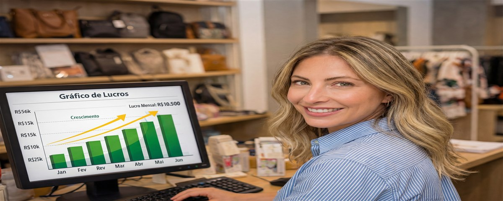

Só vendo no Natal e no Dia das Mães — e já valeu muito a pena
Trabalho CLT, não tenho tempo para vender o ano todo e não quero ter. Mas descobri que duas datas estratégicas por ano são mais do que suficientes para turbinar a renda — e ainda sobra energia para viver.

Meu nome é Amanda Barbosa, tenho 36 anos, sou analista de RH numa empresa de tecnologia em Curitiba, trabalho oito horas por dia de segunda a sexta, tenho uma filha de oito anos, faço academia três vezes por semana e ainda tento ler pelo menos um livro por mês. Minha vida é cheia — do jeito bom, mas cheia. Quando me contaram que dava para ganhar uma renda extra revendendo pijamas, minha primeira reação foi: "Legal, mas eu não tenho tempo pra isso."
E eu estava certa. Não tenho tempo para ser revendedora de tempo integral. Não tenho tempo para postar todo dia nas redes, para responder direct a qualquer hora, para controlar estoque toda semana. Mas descobri que não precisava disso. Descobri que existe um modelo de revendagem que funciona perfeitamente para quem, como eu, só tem tempo em momentos específicos do ano. Eu chamo de revendagem sazonal — e ela mudou a minha conta bancária sem bagunçar a minha rotina.
A descoberta: pijama é presente perfeito
Foi minha cunhada Roberta quem me apresentou a Feminnita. Ela vende pijamas o ano todo e faz muito bem. Não é o meu perfil — mas ela me mostrou os produtos, deixei passar a mão no suede e pensei: isso é o presente perfeito para o Natal. Qualquer mãe, qualquer avó, qualquer amiga íntima ia gostar de ganhar isso. O tecido era irresistível, o preço era justo e a embalagem era bonita.
Fiz uma pergunta simples para a Roberta: "Se eu fizer um pedido só para o Natal, vale a pena?" Ela me respondeu com outra pergunta: "Quantas pessoas você vai presentear este ano?" Pensei: a minha mãe, a minha sogra, as minhas duas cunhadas, a minha melhor amiga, a minha colega de trabalho que a gente faz amigo secreto... seis presentes garantidos, fora o que eu pudesse vender para outras pessoas. Sim, valia muito a pena.
"Quando percebi que eu já ia comprar seis pijamas para presentear no Natal de qualquer forma, entendi que fazer um pedido no atacado e ainda vender alguns extras não era virar revendedora — era ser esperta. Comprar bem e usar essa vantagem a favor de todo mundo."
O primeiro Natal: a experiência que me convenceu
Em outubro de 2024, dois meses antes do Natal, fiz meu primeiro pedido na Feminnita. Planejei com calma: os seis presentes que eu já ia dar de qualquer jeito, mais dez peças extras para oferecer no trabalho e para amigas. Total: dezesseis pijamas. O valor foi muito menor do que se eu tivesse comprado no varejo — e ainda sobrou margem para o lucro das peças vendidas.
Montei uma mensagem simples e mandei no grupo do trabalho e para algumas amigas próximas:
Em dois dias, as dez peças extras tinham somem. Uma colega comprou dois — um para a mãe e um para a sogra. Outra pediu três. Uma terceira veio me perguntar se eu ainda teria para o amigo secreto da família. Fiz até um pedido adicional de emergência porque a demanda foi maior do que esperava.
Resultado do primeiro Natal: presenteei todo mundo que queria presentear sem gastar mais do que teria gasto em varejo, e ainda lucrei R$ 980 com as vendas extras. Tudo em outubro e novembro, sem interferir na correria de dezembro.
O Dia das Mães: a confirmação de que o modelo funciona
Com o Natal positivo na cabeça, comecei a planejar o Dia das Mães de 2025 cedo — em março. Dessa vez, com mais confiança e mais organização. Criei uma listinha de quem eu achava que ia comprar, confirmei interesse com antecedência, fiz o pedido com base na demanda real e não no chute.
"O segredo da revendagem sazonal é o planejamento antecipado. Quem vende para o Dia das Mães precisa fazer o pedido em março ou abril. Quem deixa para maio já atrasa o frete e perde a janela. O produto não faz milagre se o timing está errado."
No Dia das Mães de 2025, foram vinte e três peças vendidas. A maioria delas eram presentes — filhos comprando para mães, maridos comprando para esposas. Aprendi que o suede da Feminnita tem um apelo fortíssimo como presente justamente porque parece um luxo acessível: a embalagem é bonita, o tecido impressiona quem recebe, e o preço que a pessoa paga — no varejo, na minha mão — ainda é justo.
Como organizo os dois eventos por ano
Tenho um calendário mental fixo agora. Em março, começo a planejar o Dia das Mães: faço o pedido em abril, entrego em maio. Em outubro, começo a planejar o Natal: faço o pedido em outubro ou novembro, entrego até a segunda semana de dezembro. O resto do ano eu simplesmente não vendo. Não porque não daria, mas porque não quero — e essa escolha é parte do que torna o modelo sustentável para mim.
Entre os dois eventos, já tenho clientes que me enviam mensagem perguntando quando vai ter mais. Isso é o melhor sinal possível: significa que o produto é bom e que elas vão comprar de novo quando eu abrir. Não perco essas clientes por "ficar fechada" o resto do ano.
"Descobri que não vender o ano todo, paradoxalmente, criou um senso de exclusividade. As pessoas esperam. Quando abro os pedidos, existe uma animação que não existiria se eu vendesse o tempo todo."
O balanço de dois anos de revendagem sazonal
Em dois anos, participei de quatro eventos sazonais — dois Natais e dois Dias das Mães. O faturamento total nesses quatro eventos foi de R$ 14.800. O lucro líquido ficou em torno de R$ 6.200. Em dois anos, trabalhando intensamente por dois períodos de cerca de um mês cada — ou seja, dois meses de trabalho real em vinte e quatro — eu complementei minha renda em R$ 6.200.
Esse dinheiro pagou as férias da minha família no verão passado. Integralmente. Uma semana em Florianópolis com minha filha e meu marido, sem dever nada, sem tirar do salário, sem apertar em nenhum outro lugar. Foi o presente que eu dei para mim mesma — e veio dos pijamas.
Para quem trabalha CLT e acha que não dá tempo
Se você trabalha CLT, tem filho, tem compromisso, tem vida e acha que revendagem não é para você — talvez você esteja pensando no modelo errado. Você não precisa ser revendedora de tempo integral. Você pode ser revendedora estratégica, sazonal, cirúrgica.
Escolha as duas datas que mais fazem sentido para o seu círculo social. Planeje com antecedência — pelo menos dois meses antes. Faça um pedido com base na demanda confirmada, não no otimismo. Entregue com cuidado. E depois descanse até a próxima data.
É um modelo simples, acessível e compatível com uma vida cheia. Não precisa mudar a sua rotina para ter uma renda extra que faça diferença real. Precisa de planejamento, de um produto que vale a pena vender — e a Feminnita passa com folga nesse critério — e da disposição de trabalhar bem por um período curto e intenso.
Para mim, valeu muito a pena. E vai continuar valendo — no Dia das Mães que está chegando, e no Natal depois disso.
O Dia das Mães está chegando — comece agora
Fale com a equipe Feminnita e monte seu pedido para a data mais lucrativa do primeiro semestre.
Falar com a equipe